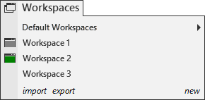
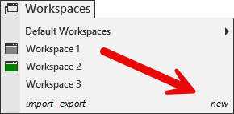
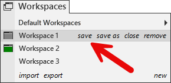
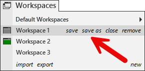
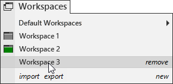
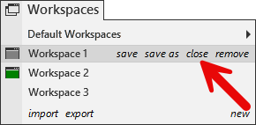
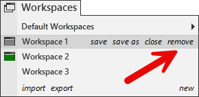

|
<< Click to Display Table of Contents >> Workspaces Menu |


|
Workspaces Menu
|
<< Click to Display Table of Contents >> Workspaces Menu |
|
The following menus and items are available via the Workspaces menu of the NinjaTrader Control Center.

•A workspace named "Untitled1" will load automatically
•You can have multiple workspaces open simultaneously
•Open workspaces are indicated by the rectangle icon, if there is no icon then the workspace is closed
•The currently active workspace has a filled green rectangle. You can only have one active workspace
•You can toggle the currently displayed workspace by selecting the workspace you wish to display from the Workspaces menu or using the Hot Key SHIFT + F3
•On application shut down you will be given the opportunity to save changes in all open workspaces
Create a Workspace 1.From the NinjaTrader Control Center select the menu Workspaces 2.Select "new" 3.You will be prompted to type in a name for the new workspace. 4.On "OK" you will be switched to the new workspace. |
Save a Workspace 1.From the NinjaTrader Control Center select the menu Workspaces 2.Move your mouse over the name of the workspace you want to save. 3.Select "save" 4.Any changes made to the currently displayed workspace will be saved Save a Workspace to a New Workspace File 1.From the NinjaTrader Control Center select the menu Workspaces 2.Move your mouse over the name of the workspace you want to save to a new workspace file 3.Select save as 4.You will be prompted to type in a name for the new workspace file. 5.On "OK" you will be switched to the new workspace, the old workspace will persist with no changes and the workspace will be saved to the new Workspace file |
Open a Workspace 1.From the NinjaTrader Control Center select the menu Workspaces 2.Move your mouse over the workspace that you would like to open and left mouse click. In the screenshot above "Workspace3" is closed and clicking on "Workspace3" will open it and make it the active currently displayed workspace. |
Close a Workspace 1.From the NinjaTrader Control Center select the menu Workspaces 2.Move your mouse over the workspace you would like to close 3.Select "close". The selected workspace will be closed and can be reopened at any time.
At least one workspace must remain open, if you close the last workspace a temporary workspace will be created. |
 Remove a Workspace1.From the NinjaTrader Control Center select the menu Workspaces 2.Move your mouse over the workspace you would like to remove 3.Select "remove". You will get a dialog asking you to confirm the delete as any remove operation cannot be undone
|
 How to quickly switch between workspaces
How to quickly switch between workspaces
Quickly Switching Between WorkspacesPressing SHIFT+F3 keys together will cycle to the next open workspace. |
Restore a Prior Version of WorkspacesIf you need to restore a previously saved version of a saved workpspace, you can do this within the Control Center by going to Tools and selecting Database Management. In here you will see a Restore Workspace section to complete the recovery. See the Database Operations section.
By default 10 previously saved versions of your workspaces will be retained. To modify how many recovery versions are available within the Control Center go to Tools and select Options. Within the General section go to Preferences and set the Versions of recovery workspaces. See the Options General section.
If you are unable to recover a prior version, if a backup was done you can restore from a backup. See the Backup & Restore section. |